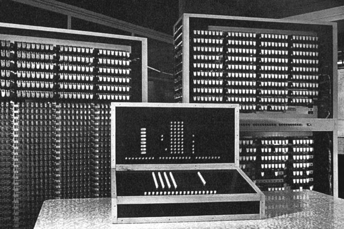
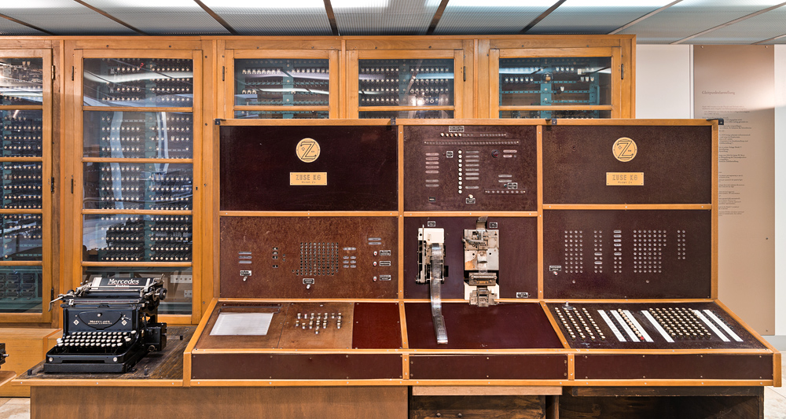

| Achievement | Year |
|---|---|
| Development of the Z1 computer | 1935-1938 |
| Development of the Z3 computer | 1941 |
| Description of the Plankalkül programming language | 1945 |
| Launch of the Z4 computer | 1950 |
Z1 (picture above) was Zuse’s first computer and it had a weight about 1000 kg, and consisted from some 20000 parts. It was a programmable computer, based on binary floating point numbers and a binary switching system. It consisted completely of thin metal sheets, which Zuse and his friends produced using a jigsaw at his parents apartment. The only electrical unit was an electrical engine with power 1kW, which was used to provide a clock frequency of one Hertz (one cycle per second), actually it had also a crank for manually cycling the machine. Z1 consisted of 6 basic units: Control unit, Arithmetical unit, Input/Output, Memory, Memory selector and Tape reader.
The punch tape and punch tape reader were used for programming of Z1. The control unit supervised the whole machine and the execution of the instructions. The arithmetic unit was an adder, and all of the operations were internally reduced to additions or subtractions. The memory, which consisted of 64 words, each containing 22 bits, was formed from three blocks. The first block contained 64 words for the exponents and signs (8 bits for each word). The other two blocks each contained 32 words for the mantissa (14 bits for each word). The selection unit interpreted the address for the memory, managed by the control unit. The input device was a keyboard, numbers were presented to the machine in a decimal form with an exponent, then they were converted to binary normalized floating point representation and transferred to the memory. Similarly, the output device converted the binary floating point number in register into a decimal number with an exponent and showed them on a annunciator.
The manufacturing of Z2 (picrute below) began in 1938 and the prototype was ready next year. Z2 was quite similar to Z1, with the following differences:
In 1942 Zuse started the development of his next computer—Z4 (picture below). The goal of the Z4, was to build the prototype for a machine, that was intended to be mass produced in the thousands. He build an early prototype and presented to EHT in Zurich, where it was found suitable for their use and Zuse founded his own company (Zuse KG) and started to build an improved version of Z4 for EHT, adding a conditional branch capability, instructions for printing the results on a Mercedes typewriter or a punch tape, storing numbers on the punch tape in order to transfer them into the Z4’s memory, writing results on a punch tape and others. The Z4 worked very reliably and also worked during the night without supervision, something unbelievable in this time. It was possible to learn the programming of the Z4 in as little as three hours. The Z4 had a large instruction set in order to calculate complicated scientific programs. The arithmetic processor was a powerful binary floating processor.
From 1942-1946 (at the same time as he was developing the Z4 computer), Zuse was also developing ideas as to how his machines could be programmed to understand mathematical logic. Konrad Zuse wrote dozens of example programs to demonstrate the strenght of the language. In his notes one can find the sorting of lists, search strategies, relations between pairs of lists... He even used more than 60 pages to describe programs for chess-playing. The highlights of Plankalkül are: